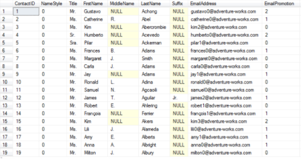

SQL injection refers to an attack where an attacker can execute malicious SQL statements (known as payloads). This is typically done by exploiting poorly designed construction of SQL statements in backend code. Hackers can add, modify, and delete data stored in the DB, as well as gain access to sensitive data. Perhaps one of the most recently famous examples of an SQL injection were the vulnerable Equifax servers.
We typically interact with our SQL Databases using Python, Flask, and SQLite3. Database files contain tables with names for each column
First, we inport the sqlite3 library. We then create a connection to the database, and from the connection, we set a variable to be the cursor of the connection. After, we execute an SQL statement, commit changes, and close the connection. See the following example:
Import sqlite3
conn=sqlite3.connect('example.db')
c=conn.cursor()
c.execute("CREATE TABLE students (name text, grade real)")
conn.commit()
conn.close()
The user of a web application like the ones we have done in class gives information in the form of an <input> HTML tag. As developers, we store the resulting POST or GET request data in a python variable. For this example, this variable will be userName. In the following codeexample, we print out relevant data to a single user name:
sqlStatement = "SELECT * FROM students WHERE name = " + userName
result = c.execute(sqlStatement)
for row in result:
print row
Look at the part where we compose the sql statement: sqlStatement = "SELECT * FROM students WHERE name = " + userName. If a malicious user chooses not to put their username, but rather some logic stuff, such as "105 OR 1=1" into the <input> HTML tag, the resulting string, sqlStatement is now equal to "SELECT * FROM students WHERE name = 105 OR 1=1" The executed code now looks like the following:
sqlStatement = "SELECT * FROM students WHERE name = 105 OR 1=1"
result = c.execute(sqlStatement)
for row in result:
print row
name=105 or 1=1 is a logical statement that is always true. This results in the entire table of students being printed out.
Recall that ";" can be used to denote the end of an SQL statement. If a semicolon is used in the <input> HTML element, then a hacker can put in any SQL statement they wish. Let's say that they put 105; DROP TABLE students. The sqlStatement string is now "SELECT * FROM students WHERE name = 105; DROP TABLE students". This hacker has now just caused the loss of an entire table.
Hackers can also modify data using UPDATE-SET-WHERE. Lets say they type in 105;UPDATE students SET testScore1 = 100 WHERE name="Bob Ross". Now our hacker, Bob Ross, has given himself a free 100 for the class.